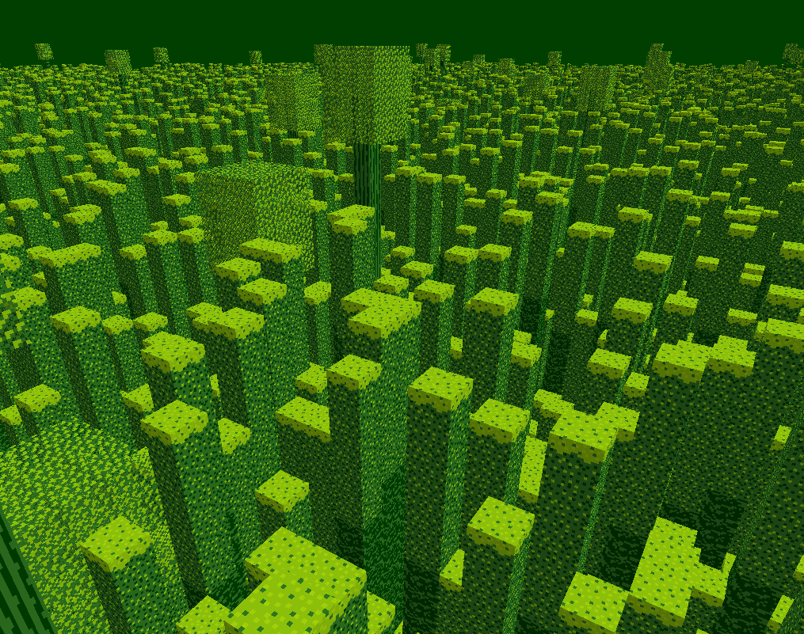
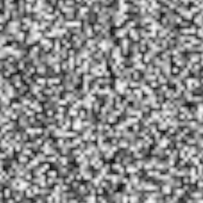
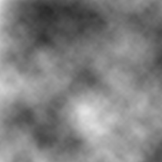
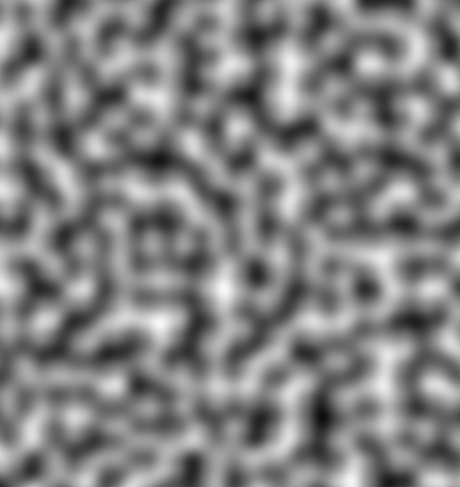

What, you want your noise to be 'smooth' now? Was value noise not good enough? I happen to think it looked rather nice:
No? Okay. Well, we're going to need a different approach then. We still want a grid-based noise generator where we can pass a coordinate pair to a function to get a random value, but it would be nice if we could choose values in between those integer coordinates. If we could smoothly interpolate to find a value that is a sort of weighted combination of neighboring random values and is continuous, that would be just perfect. One might consider bilinear filtering to smooth out value noise, but this is only half of a solution and leaves a lot to be desired:
Sure it looks smoother, but it's still quite rough and so obviously aligned to a grid. I have to give credit to this solution though because upon adding different octaves of this linearly filtered noise together, you can still achieve some impressive textures:
It turns out that there is a more elegant solution along those lines, with a few key differences. It's called Perlin noise! You're probably familiar with Perlin noise and its ability to produce seamless and smooth grid-based noise like this:
Now that's SMOOTH! Why wouldn't we use Perlin noise?! One thing that might scare people away when trying to learn Perlin noise is the mention of... dot products... and derivatives... shudder. Truthfully though, there's nothing complicated going on as far as linear algebra and calculus goes.